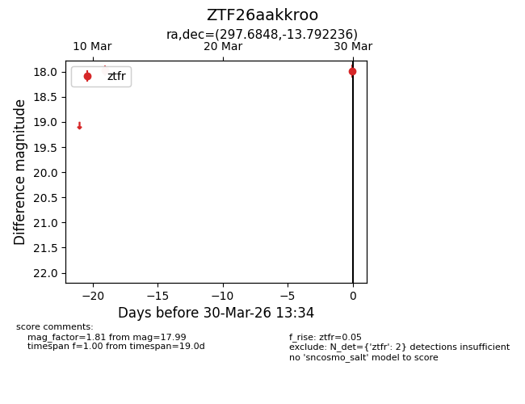
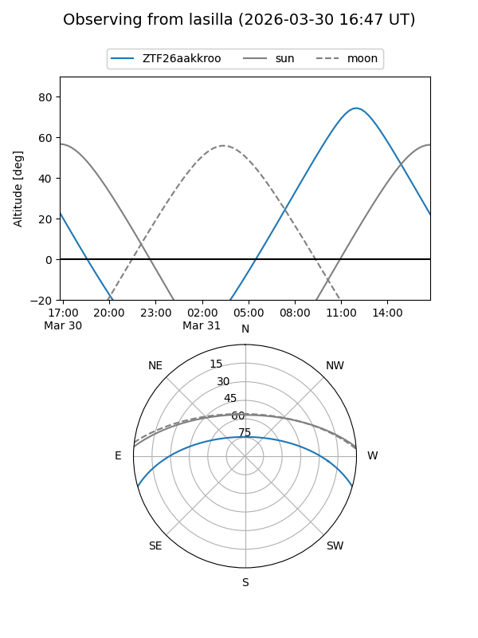
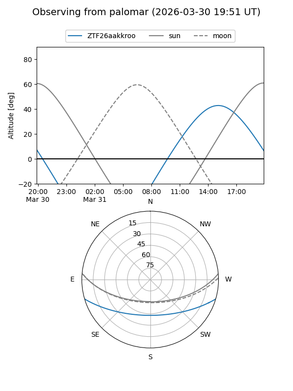

ZTF26aakkroo
Target ZTF26aakkroo at 2026-03-30 13:38
Aliases and brokers:
FINK: link
Lasair: link
ALeRCE: link
alt names
ZTF26aakkroo (ztf,fink_ztf)
Coordinates:
equatorial (ra, dec) = 297.6848,-13.79224
equatorial (HMS+DMS) = 19:50:44.34,-13:47:32.05
galactic (l, b) = (26.9205,-19.26057)
Flags:
Photometry:
last ztfr=17.99
2 ztfr detections
Lightcurve

Visibility


Additional plots